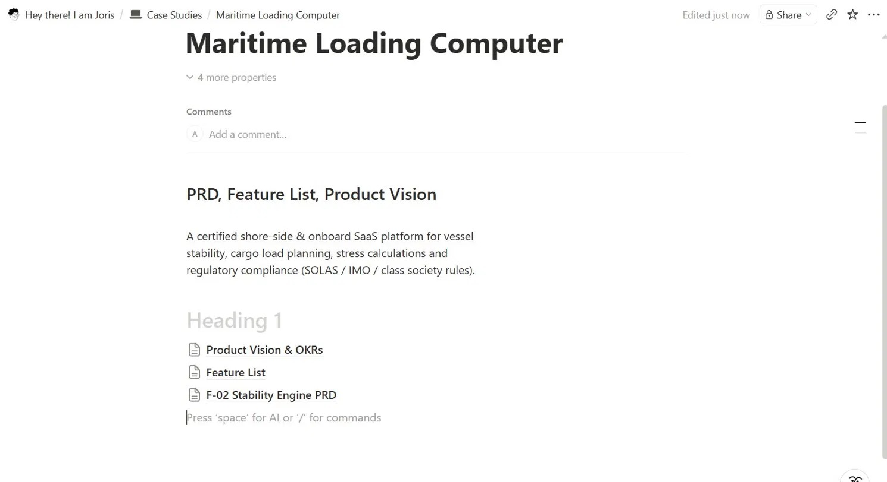
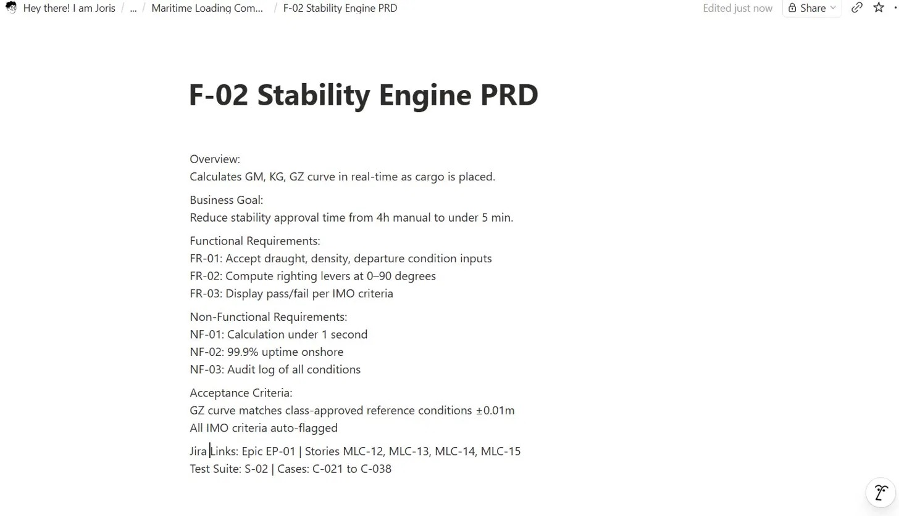
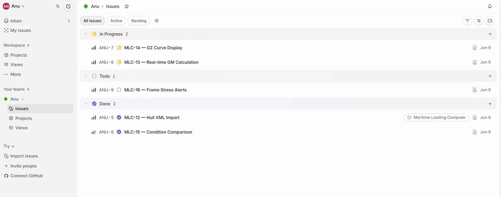
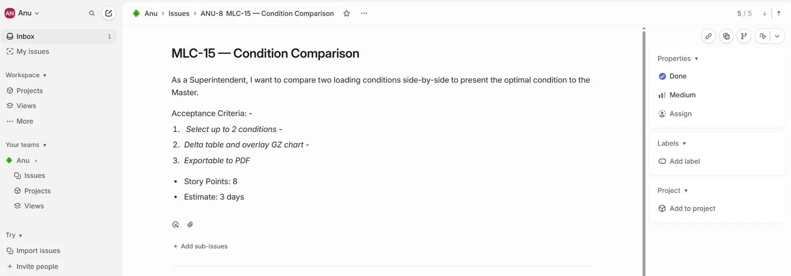
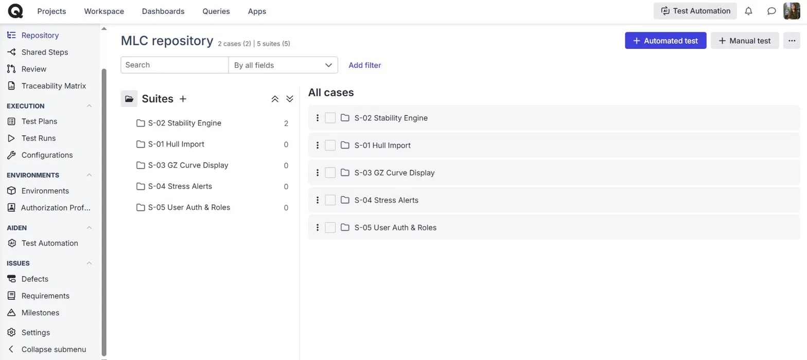
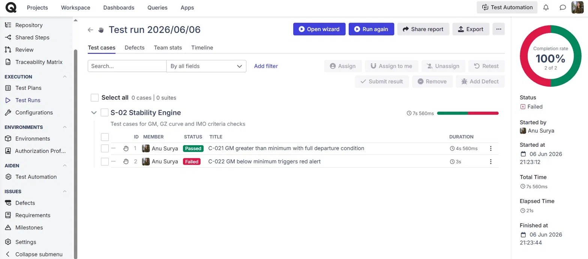
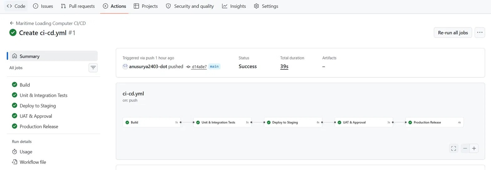
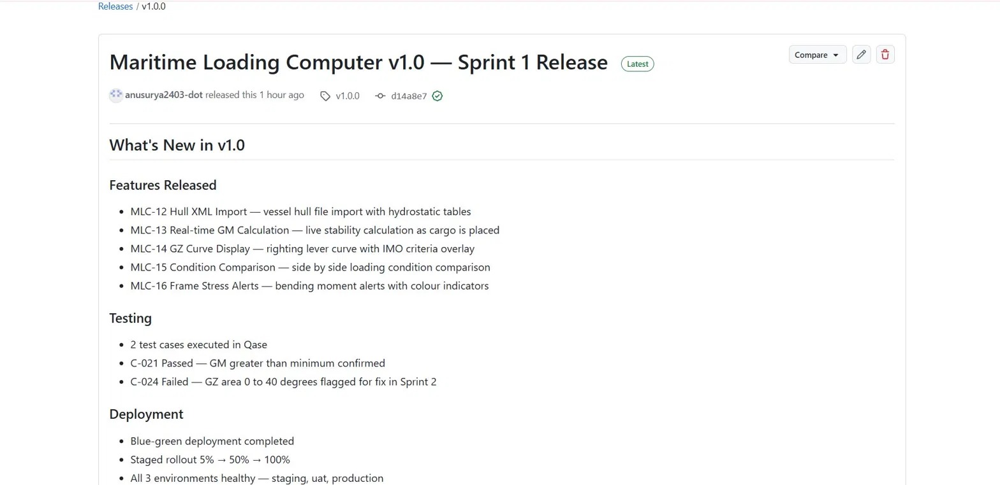
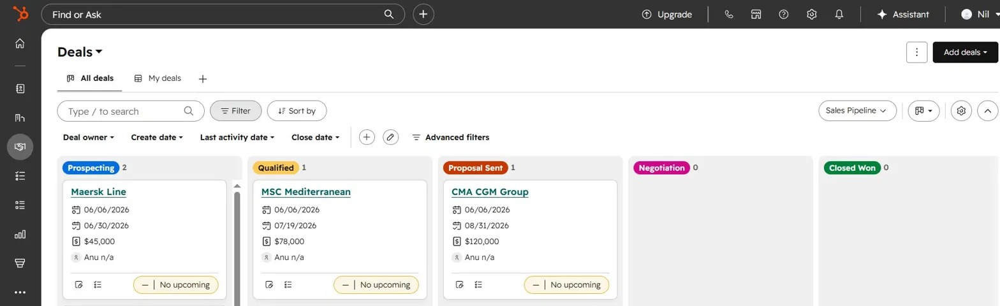
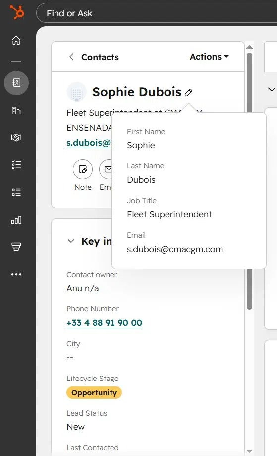

A certified shore-side and onboard SaaS platform for vessel stability, cargo load planning, and regulatory compliance.
Created a structured product documentation space covering the product vision, full feature list with priorities, and a detailed PRD for the Stability Engine module.


Set up the project in Jira with epics, user stories, and sprint tracking. Managed issue statuses to reflect real sprint progress across the team.


Built a complete test management setup with 5 test suites and executed a Sprint 1 test run with real pass and fail outcomes mapped to Jira stories.


Set up a 5-stage CI/CD pipeline with 3 environments and published a formal v1.0 release with full release notes documenting features, testing outcomes and deployment details.


Managed the commercial side of the product by tracking shipping company deals, contacts and sales pipeline stages — showing full product lifecycle ownership from build to sell.

